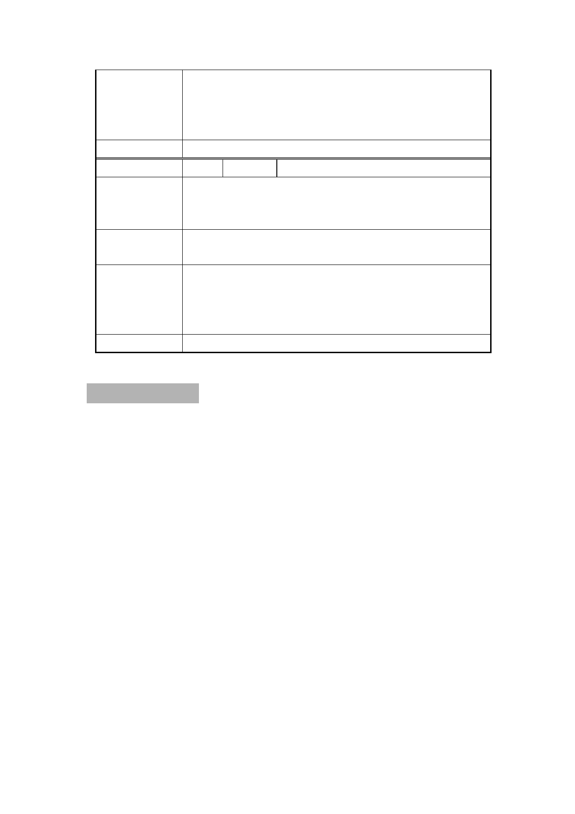

本計畫案係回復原都市計畫使用分區之都市計畫變
市 府 回 應 更案，後續須提送本市都市計畫委員會審議，主要
說 明 計畫案須報請內政部核定，俟內政部核定後，據以
發布實施。
委 員 會 決 議 同「市府回應說明」。
編 號 11 陳情人 蔡○玉
為避免官商勾結弊端叢生（如美河市、雙子星等案）
陳 情 理 由 及保障人民私有財產權益自由分配，不應將個人私
有土地隨意取得操弄，變相圖利財團。
建議辦法
撤銷聯合開發案，應將本案地主之土地恢復原都市
計畫使用分區，讓人民自行作主。
本計畫案係回復原都市計畫使用分區之都市計畫變
市 府 回 應 更案，後續須提送本市都市計畫委員會審議，主要
說 明 計畫案須報請內政部核定，俟內政部核定後，據以
發布實施。
委 員 會 決 議 同「市府回應說明」。
散會:10 時 30 分
第 24 頁 / 共 25 頁